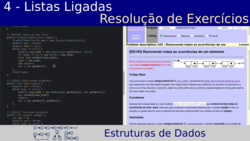

Vídeos das Aulas Teóricas e de outro temas
Aqui irão ser colocadas ligações para todos os vídeos das aulas teóricas (que serão pré-gravadas).
Clicar na imagem ou no título para aceder ao vídeo. Os vídeos estão publicados por ordem cronológica crescente da aula respetiva.
| Playlist com todos os vídeos |
| #01 - Introdução ao Java: história e um primeiro programa (43m03s) | |
| Slides incluídos: 1 a 8 | |
| Introdução ao Java: contexto histórico; versões; vantagems: portabilidade, segurança e ferramentas; live-coding de um primeiro programa; uso da shell e emacs; chavetas e comentários. | |
| #02 - Variáveis e operadores; instruções condicionais e de ciclo (1h23m33s) | |
| Slides incluídos: 9 a 28 | |
| Tipos de dados: limites, operadores, identificadores, âmbito, conversões e precedências; Instruções de controlo de fluxo: condicionais (if, operador ternário) e de ciclo (while, for, do-while, break, continue). | |
| #03 - Classes e Programação Orientada a Objectos (53m49s) | |
| Slides incluídos: 29 a 38 | |
| Fundamentos de programação orientada a objectos; conceitos e terminologia: classes, referências, objectos, métodos construtores, atributos; operadores new e ponto; variáveis e métodos estáticos; exemplos de classes e conceitos associados com livecoding. | |
| #04 - API do Java: Strings, Arrays, I/O (1h22m38s) | |
| Slides incluídos: 39 a 61 | |
| API do Java e documentação; classe String e seu métodos principais; uso de arrays; conceito de package; package utilitário Arrays, I/O em Java e a classe System; classe Scanner e seus métodos principais; escrita formatada com printf; regras de etiqueta nos nomes de métodos e atributos. | |
| #05 - Programação Estruturada (1h24m06s) | |
| Slides incluídos: 1 a 12 | |
| Regras metodológicas para resolução de problemas; conceitos de programação estruturada; exemplo de boas práticas com a implementação da resolução de um problema relacionado com um jogo do galo generalizado. | |
| #06 - TADs e Princípios de Programação Orientada a Objectos (1h13m20s) | |
| Slides incluídos: 1 a 14 | |
| Princípios de Programação Orientada a Objectos: abstração, encapsulamento, modularidade; conceito de Tipo de Abstracto de Dados (TAD); TAD vector: conceito, operações e sua implementação; palavras-chave "this" e "private"; override do método "toString". | |
| #07 - Interfaces e TAD Conjunto (1h29m41s) | |
| Slides incluídos: 15 a 34 | |
| Conceito e uso de interfaces; TAD Conjunto: conceito, definição e APIs e possíveis implementações; TAD Conjunto como lista num array: implementação com "live coding" e análise de vantagens e desvantagens; geração de excepções customizadas: TAD Conjunto como array de booleanos: vantagens e desvantagens. | |
| #08 - Genéricos e Herança (1h09m36s) | |
| Slides incluídos: 35 a 55 | |
 |
Conceito de genéricos; implementação exemplo de um par genérico; "boxing" e "unboxing" automáticos; herança: conceito, palavras-chave "extends" e "super", subclasses e acesso a atributos e métodos, override; classes e métodos abstractos; exemplo de uso de heranças para implementa progressões. |
| #09 - Listas Ligadas Simples (1h21m54s) | |
| Slides incluídos: 1 a 17 | |
 |
Estruturas de dados sequenciais; vantagens e desvantagens de arrays; conceito de listas ligadas; implementação de listas ligadas: classes para um nó e para uma lista, adicionar, remover e aceder a elementos, imprimir conteúdo. |
| #10 - Listas Ligadas Circulares e Listas Duplamentes Ligadas (55m01s) | |
| Slides incluídos: 18 a 38 | |
| Motivação para listas circulares; escalonamento "round-robin"; implementação de listas circulares; motivação para listas duplamente ligadas; implementação de listas duplamente ligadas; conceito de "sentinelas". | |
| #11 - Pilhas, Filas e Deques (58m19s) | |
| Slides incluídos: 35 a 55 | |
| TAD Pilha (stack): operações fundamentais (push e pop) e implementação com listas ligadas; TAD Fila (queue): operações fundamentais (enqueue e dequeue) e implementação com listas ligadas; TAD deque (double ended queue); TADs sequenciais na API do Java; interface Iterable e uso da instrução de ciclo simplificada do tipo foreach. | |
| #12 - Resolução de Exercícios de Listas (1h22m24s) | |
| (livecoding) | |
|  | Implementação com "live coding" (e explicações) de 6 problemas de listas ligadas simples. Nomeadamente, são resolvidos os problems ED188 (get), ED189 (remove), ED190 (copy), ED191 (duplicate), ED192 (count) e ED193 (removeAll). |
| #13 - Padrões Geométricos (1h33m05s) | |
| (livecoding) | |
| Explicação e implementação com "live coding" do problema de desafio "[ED249] Padrões Geométricos". | |